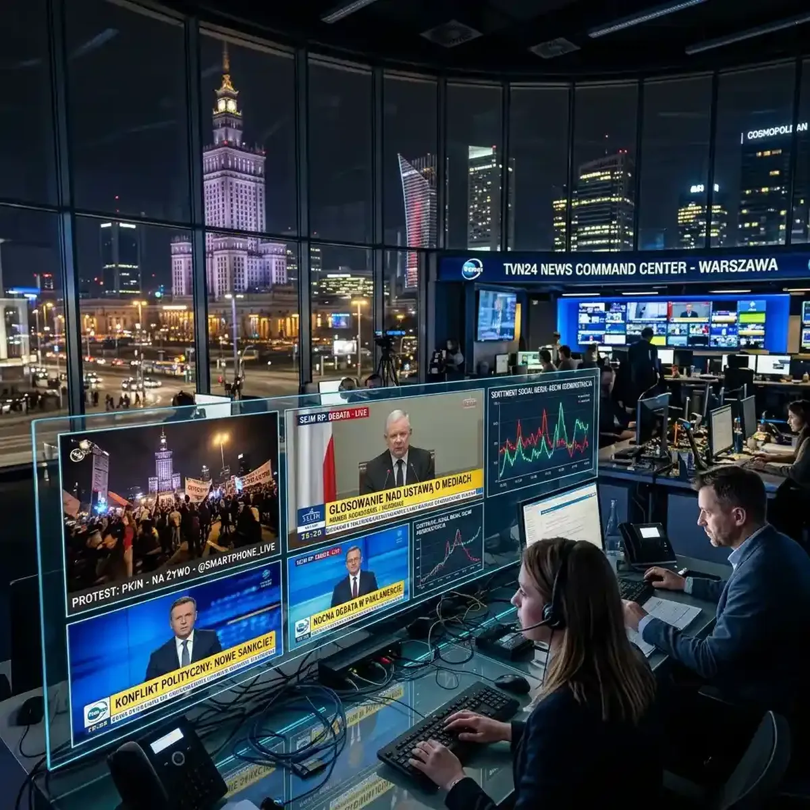

Monitoring Polish News and Politics in Real-Time: A Digital Workflow

Amazing Question: As breaking news fragments across traditional broadcasts and countless social media streams, does multi-viewing become a vital tool for digital literacy or a shortcut to sensory overload?
The contemporary Polish political and social landscape is characterized by an extraordinary degree of rapid, often volatile, and constantly shifting momentum. Significant national elections, widespread, highly organized public protests, deeply consequential parliamentary debates regarding fundamental civil liberties, and the ever-present, complex geopolitical realities of being a crucial, leading nation in deeply turbulent Eastern Europe all combine uniquely to guarantee that the national news cycle is seldom, if ever, quiet or predictable. For dedicated journalists, politically active citizens, deeply invested foreign analysts, and anyone who simply demands a comprehensive, unvarnished understanding of the rapidly evolving events on the ground, relying exclusively on a solitary, heavily edited evening news bulletin is no longer just inadequate; it is fundamentally dangerously insufficient. The modern expectation is for absolute, real-time, instantaneous awareness, a profoundly demanding requirement that intrinsically necessitates a radically different, highly sophisticated approach to comprehensive digital media consumption.
The Inherently Fragmented Nature of Breaking News
In the past, during moments of profound national importance or sudden crises, the entire Polish population would understandably collectively tune in to one of absolute top two or three major terrestrial television networks (such as TVN24, Polsat News, or the state broadcaster TVP Info) to receive the universally accepted, authoritative account of deeply significant events. However, that historically monolithic, top-down media landscape has fundamentally and irrevocably shattered into thousands of distinct, competing digital fragments. When a massive, spontaneous protest suddenly erupts powerfully onto the historic streets of Warsaw, or a highly controversial, radically transformative piece of major legislation is unexpectedly frantically introduced in the Sejm (the crucial lower house of the Polish parliament) during the late hours of the night, the initial, vital, raw information invariably forcefully breaks on rapidly moving social media platforms long before traditional, slower-moving cameras can physically arrive, thoughtfully set up, and officially begin their polished, carefully prepared broadcasts.
Harnessing the Deep Power of Citizen Journalism
The most immediate, undeniably raw, and viscerally authentic coverage of major, rapidly developing Polish events often originates directly from the ubiquitous smartphones of ordinary citizens who unexpectedly find themselves standing at precisely the epicenter of the breaking news. Intrepid independent streamers, deeply committed local activists utilizing robust platforms like Facebook Live or Twitch, and rapidly uploading citizen journalists passionately documenting events on TikTok frequently offer a perspective that is fundamentally impossible for a heavily encumbered, traditional, slow-moving television crew to match in sheer immediacy and raw authenticity. By actively simultaneously incorporating these crucial, ground-level, unfiltered perspectives definitively alongside the deeply polished, carefully considered analysis provided by the major, established news networks, the highly engaged, discerning viewer fundamentally effectively effectively bypasses the inherent, inevitable editorial bias that unavoidably accompanies any single, isolated news source.
Building Your Comprehensive Digital Newsroom
This profoundly challenging, densely layered, highly complex information environment is precisely where a highly sophisticated, robust multi-screen viewing platform exactly like YoutubeMulti transforms rapidly from being widely considered a mere luxury into an absolute, pressing, undeniable necessity. Imagine configuring a profoundly powerful, highly personalized, incredibly comprehensive digital newsroom right on your exceptionally large primary monitor. In the expansive, prominent center, prominently displayed is the highly reliable, official live, continuous feed from the fiercely independent Polish parliamentary channel precisely meticulously tracking the complex, ongoing legislative debate. This provides the indispensable official, undeniable, bedrock baseline record of exactly what is transpiring politically. However, the vital context invariably surrounding that core debate is rarely, if ever, found on the main, official screen.
The Indispensable Value of Peripheral Context
To acquire the crucial, highly nuanced context necessarily required to truly, deeply understand the rapidly unfolding political reality, effectively utilizing the flawlessly integrated capability of intelligently arranged peripheral video tiles is absolutely, undeniably essential. The immediate, directly adjacent screen spaces must be strategically devoted to actively streaming the major, deeply polarized, competing national news networks cleanly simultaneously, allowing you to instantly, comprehensively compare their sharply contrasting editorial framing of the incredibly exact same underlying events in real-time. Critically, yet another prominent, easily accessible section of your expansive digital workspace absolutely must be dedicated to meticulously monitoring a rapidly updating, carefully curated, highly specific feed of verified, trusted, independent journalists and deeply insightful political commentators continuously posting their rapid-fire, immediate reactions and highly detailed, expert analysis directly onto platforms like X (formerly Twitter) or various deeply specialized niche blogs. This profoundly multifaceted, sophisticated viewing approach unequivocally completely annihilates entirely the restrictive, highly limiting, inherently biased single-source perspective. It fundamentally transforms the deeply frustrating, overwhelming chaos of the seemingly disconnected modern breaking news cycle into a highly structured, comprehensively understandable, profoundly coherent, multi-dimensional narrative, decisively empowering the highly informed citizen to draw their own independent, incredibly well-supported, highly accurate conclusions based firmly entirely upon a significantly vastly significantly broader, genuinely complete spectrum of instantly continuously instantly available, rigorously cross-referenced information.